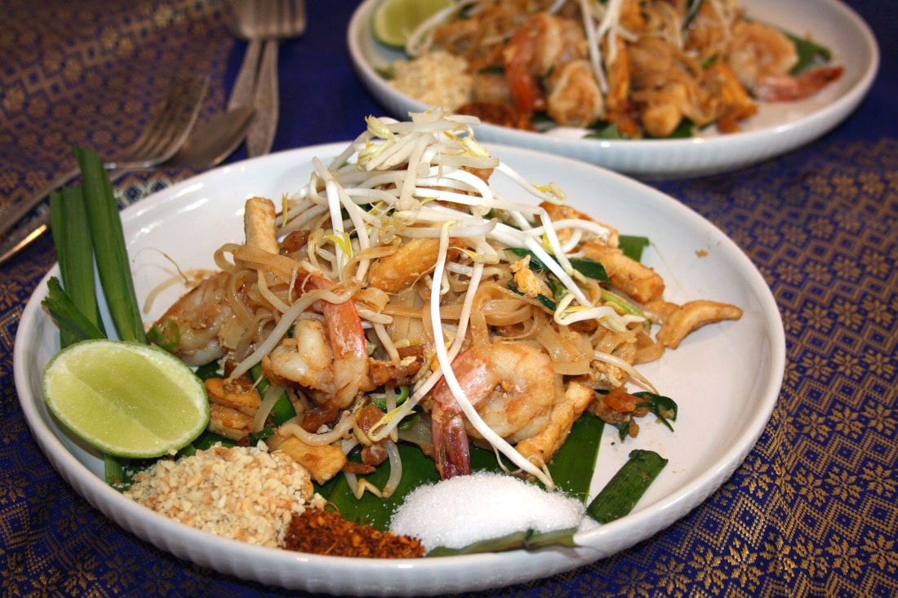

To make Pad Thai, begin by soaking rice noodles in warm water until they are soft but still slightly firm, then drain them. Prepare the sauce by mixing tamarind paste, fish sauce, soy sauce, lime juice, and sugar to achieve the signature sweet, sour, and salty balance. In a hot wok or skillet, stir-fry shrimp, chicken, or tofu with a little oil until cooked through, then set aside. Add garlic and shallots to the wok, sauté briefly, and push them to the side before cracking in eggs and scrambling them lightly. Toss in the softened noodles, pour in the Pad Thai sauce, and stir-fry until the noodles absorb the flavors and caramelize slightly. Return the protein, mix everything together, and finish with bean sprouts, scallions, and roasted peanuts. Serve hot, garnished with lime wedges, extra peanuts, and chili flakes for spice